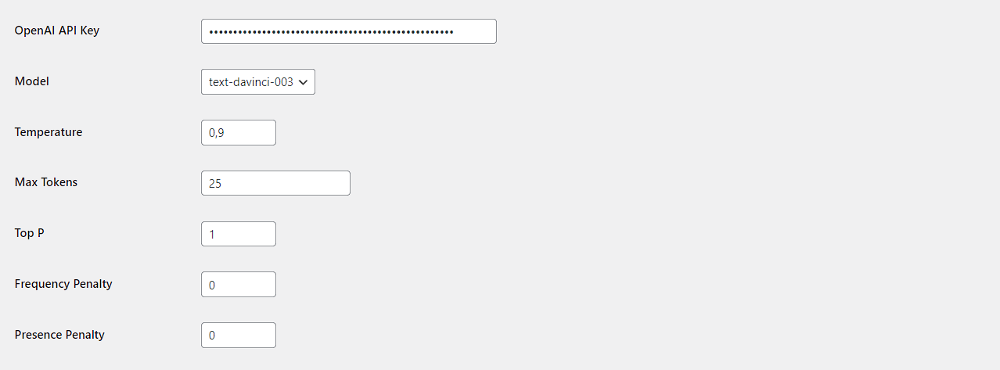
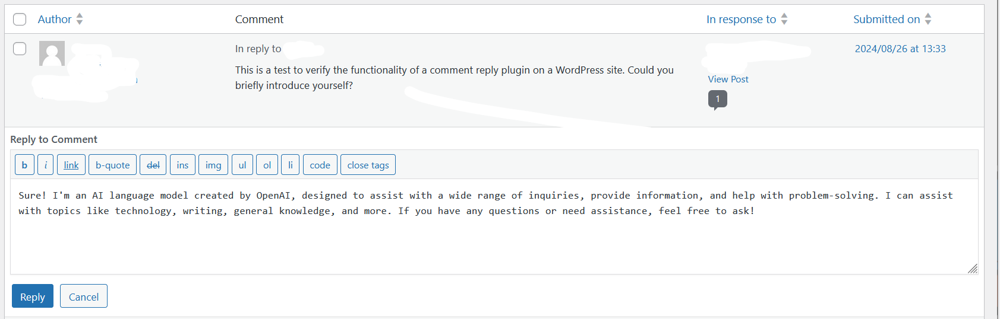

Streamline your WordPress comment management with AI-powered replies using OpenAI's GPT models.

Focused solely on generating comment replies using AI, without unnecessary bloat or hidden costs.
Completely free to use, aligning with the open-source philosophy of WordPress.
Integrates OpenAI's Moderation API to ensure appropriate content before generating replies.
Supports a variety of GPT models to fit your needs and budget.
Simple setup with all necessary settings available in WordPress admin area.
Generate context-aware replies with just one click from the comments screen.
Plugin Settings Page

AI Reply Button in Comments
/wp-content/plugins/aicc-comments-reply directoryThe plugin requires an OpenAI API key to function. You can get one from OpenAI's website.
Get started with A.I Comments Reply with GPT today and save time while engaging your audience.